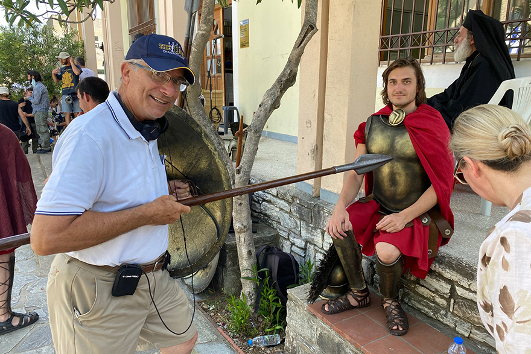

História inspiradora: Leonidas Demas, cineasta estreante aos 78 anos
data

O que começou como uma ideia há 10 anos, agora é um longa-metragem ("Um Sonho Espartano"),
disponível para aluguel em domicílio e com estreia em cinemas de cinco cidades dos EUA. Conversamos
com Leonidas para discutir como ele tornou seu sonho realidade e quais conselhos ele tem para outros
aspirantes a cineastas adultos mais velhos.
O que te inspirou a escrever o roteiro de “Um Sonho Espartano?”
Eu sempre tive essa ideia fantástica sobre a Grécia. Meu pai cresceu lá e me contou todo tipo de
verdades e mentiras sobre a história antiga, os espartanos, Gileade e tudo mais. Ele me disse que eu
era o Duque de Esparta e que, quando finalmente chegássemos lá, todo o povo estaria comemorando nas
ruas, e haveria soldados com suas lanças, escudos e tudo mais.
Finalmente chegamos lá quando eu tinha 12 anos e não havia soldados. Não havia ninguém comemorando.
Seguimos por uma estrada de terra, com muita poeira, até uma casa de um quarto com chão de terra
batida. Era 1960, não havia eletricidade nem água encanada.
Depois de me aclimatar por um ou dois dias, conheci as crianças da aldeia, os burros, as cabras, os
campos, os olivais e os laranjais, e corríamos e brincávamos bem na base de uma montanha de 2.400
metros. Era simplesmente fantástico para mim, quando criança.
Desde então, já estive lá umas 20 vezes. Desenvolvi um senso quase místico e reverente da Grécia e
sempre quis retribuir. Para homenagear a Grécia e minhas experiências lá. Então, escrevi "Um Sonho
Espartano".
Essa foi a primeira coisa que você escreveu?
Nunca tive experiência em cinema. Obviamente, como advogado, escrevi muito, era preciso escrever
memoriais, memorandos e tudo mais. Mas nunca fiz nada no sentido artístico.
Como você passou de escrever um roteiro até realmente produzi-lo?
Dez anos atrás, comecei a formular uma ideia e, há cerca de quatro anos, comecei a escrever a
história como um roteiro, porque senti que talvez fosse mais fácil escrever um roteiro de filme do
que um romance ou algo assim, porque seria um esforço muito individual. E pensei comigo mesmo: "Bem,
se eu fizer um filme, terei muitas pessoas ao meu redor que sabem o que estão fazendo, que conhecem
os aspectos técnicos, que conhecem a arte, que sabem coisas que poderão me ajudar a produzir esta
história". E pensei que seria melhor fazer dessa forma para alguém que está começando nas artes.
E acabou sendo verdade! Tenho um sobrinho que é ator em Nova York e ele conhecia um diretor
greco-americano para quem enviei o roteiro. Ele ficou apavorado porque os ancestrais dele também são
de Esparta, de uma vila a 15 minutos da minha.
Ele disse que dirigiria, e começamos a procurar um ator principal. Um dos atores que fez o teste
também era de Esparta, e o contratamos. Ele era perfeito para o papel. Depois, fomos para a Grécia e
contratamos um produtor grego que conhece todos os detalhes de como fazer um filme lá. E então
contratamos um diretor de elenco e um diretor de fotografia.
Estávamos prontos para começar a filmar, então fomos para Esparta. 95% do filme foi filmado em
Esparta, todos os nossos figurantes eram espartanos e até o prefeito espartano ficou super animado
com o filme. Foi realmente incrível.
Você tem algum conselho para outros adultos mais velhos que desejam
tentar algo novo e criativo, como fazer filmes?
Você precisa tirar da cabeça a parte pessimista. Quanto às pessoas pessimistas ao seu redor, você
pode ser gentil com elas, mas não as ouça. Você precisa ser muito positivo.
Você precisa tirar da cabeça a parte pessimista. Quanto às pessoas pessimistas ao seu redor, você
pode ser gentil com elas, mas não as ouça. Você precisa ser muito positivo.
Como você acha que sua idade afetou positivamente sua experiência?
Acho que ajudou de muitas maneiras. Há um certo respeito quando você fica mais velho, as pessoas te
ouvem e te respeitam. Obviamente, você não pode ser um babaca, porque ninguém vai te respeitar, não
importa o quão inteligente você seja. Mas você ganha um certo crédito por ser mais velho e ter mais
experiência.
O que envelhecer com atitude significa para você?
No final, o Senhor te leva. Mas enquanto você estiver aqui, se quiser continuar fazendo coisas que
sejam valiosas para você e para aqueles ao seu redor, você precisa ser muito positivo e ter uma
certa dose de coragem.
Desde o começo, pensei: "Não consigo fazer isso, não sei nada sobre cinema, estou perdendo meu
tempo". E um dia eu disse a mim mesmo: "Cale a boca, Lee, e faça isso". E fiz.
É uma batalha interna que você precisa vencer. Assuma o controle da sua vida e faça o que quiser, da
melhor maneira possível. Mesmo que não tenha sucesso, pelo menos você correu a corrida em vez de
ficar parado.
Fonte: SeniorPlanet